Seaborn Themes & Styling
Transform Raw Plots into Publication-Grade Visuals: Master Themes, the 5 Styles, Scaling Contexts, Palette Families, Matplotlib Spine Customization, and Accessible Design
🎨 01. Why Themes and Styling Matter: Readability vs. Decoration
Imagine kijiye ek college administration ne student academic performance ka ek naya dashboard launch kiya. Data 100% mathematically accurate hai: study hours, attendance percentages, aur exam marks bilkul ground-truth verified hain. Lekin jab Dean aur HODs ne dashboard open kiya, toh unhe:
- Cramped, chhote fonts dikhe jinhe padhne ke liye screen par zoom karna pada.
- Default harsh gray background aur thick black gridlines data points ko overpower kar rahi thi.
- Identical categories har chart me completely random colors me change ho rahi thi (e.g., Computer Science ek chart me red tha, dusre chart me purple ban gaya).
- Legends overlapping the aur titles cutoff ho chuke the.
Iska result? Data correct hone ke bawajood management dashboard ko trust nahi kar payi aur strategic decision-making paralyze ho gayi. Yahi hota hai jab hum styling ko ignore karte hain!
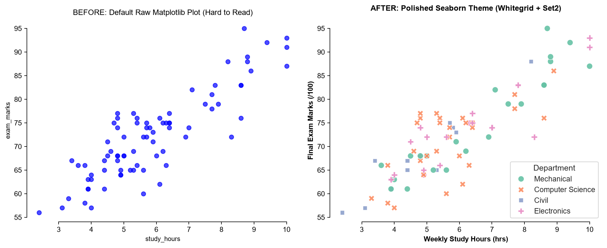
Seaborn Topic 3 me humne seekha ki dirty data ko clean kaise kiya jata hai (washing and chopping raw ingredients). Lekin agar aap 5-star ingredients ko ek gandi plate me bina kisi garnish aur symmetry ke serve kar denge, toh koi use enjoy nahi karega. Themes, styles, fonts, and palettes aapki visualization ki professional presentation hain — yeh data ki intrinsic value ko magnify karte hain!
Core Principles of Statistical Styling
| Styling Principle | Why It Matters | Bad Practice | Seaborn Best Practice |
|---|---|---|---|
| Readability First | Viewer ka focus direct data trends par hona chahiye, background decoration par nahi. | Heavy dark borders, neon background fills, distracting 3D drop-shadows. | Minimalist whitegrid ya ticks with subtle gray grids. |
| Consistent Mapping | Ek hi entity dashboard ke sabhi subplots me identical visual token carry kare. | Har chart me randomly naya color palette pick karna. | Dedicated category dictionary mapping (e.g. brand_colors). |
| Meaningful Color | Color ko visual data channel ki tarah treat karein, decorative rainbow paint nahi. | Categorical qualitative palette continuous numerical values par thop dena. | Sequential for magnitude, Diverging for target deviation, Categorical for groups. |
| Typography Hierarchy | Human eye naturally Title → Axes Labels → Data Points → Ticks scan karti hai. | Sabhi text elements ek hi font size aur regular weight me rakhna. | Controlled font_scale, bold headers, readable rotated ticks. |
🏗 02. Seaborn Styling Architecture: Building on Matplotlib's rcParams
Seaborn koi completely alag rendering engine nahi hai; yeh Matplotlib ke powerful foundation ke upar design kiya gaya ek high-level statistical interface hai. Jab aap Seaborn me koi styling function call karte hain, toh internally woh Matplotlib ke global configuration dictionary — jise matplotlib.rcParams kaha jata hai — ko modify karta hai:
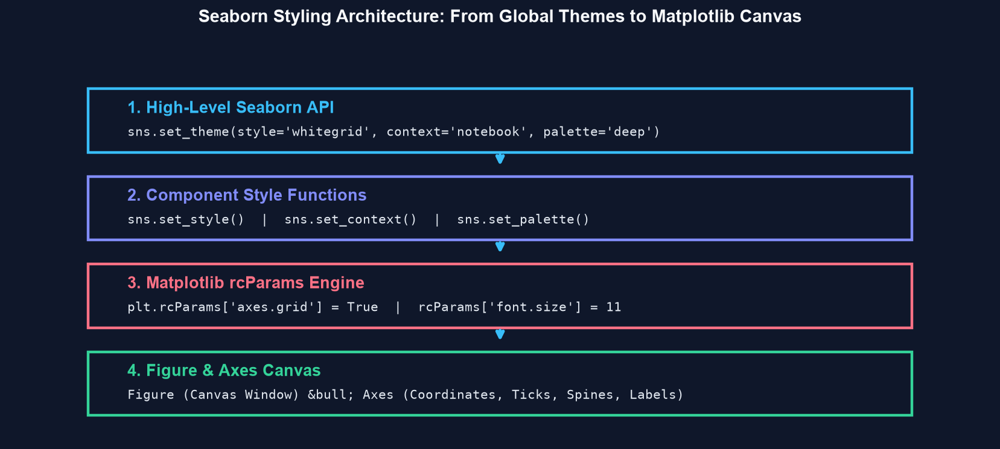
The Global Session Impact & Context Managers
Ek bohot critical concept jo har beginner ko samajhna chahiye: sns.set_theme(), sns.set_style(), aur sns.set_palette() global plotting state ko modify karte hain. Iska matlab yeh hai ki agar aapne script ke shuru me sns.set_theme(style="darkgrid") call kiya, toh uske baad pure Python runtime session me banne wale sabhi Matplotlib aur Seaborn plots darkgrid background inherit karenge!
Agar aap kisi single plot ke liye temporary style apply karna chahte hain bina global state corrupt kiye, toh Python ka Context Manager (with sns.axes_style(...):) use karein:
import seaborn as sns
import matplotlib.pyplot as plt
import pandas as pd
df = pd.read_csv("scratch/seaborn_topic4_data/college_performance.csv")
# 1. Global theme configuration for entire notebook/dashboard
sns.set_theme(style="whitegrid", palette="deep")
# 2. Temporary local style override using context manager
with sns.axes_style("darkgrid"):
fig, ax = plt.subplots(figsize=(6, 3.5), dpi=140)
sns.scatterplot(data=df.sample(50, random_state=42),
x="study_hours", y="exam_marks", ax=ax)
ax.set_title("Temporary Darkgrid (Local Scope Only)")
plt.tight_layout()
plt.show()
# Agla plot automatically global 'whitegrid' me render hoga!
print("Current active grid style:", plt.rcParams['axes.grid'])Jupyter Notebooks ya interactive scripts me hamesha top cell me ek master sns.set_theme(...) call karein taaki dashboard ka visual look uniform rahe. Agar subplots me temporary style chahiye, tabhi with sns.axes_style() use karein.
⚙ 03. Mastering sns.set_theme(): The One-Stop Configuration Powerhouse
Seaborn 0.11.0+ me sns.set_theme() standard modern function hai jo purane deprecated sns.set() ko replace karta hai. Yeh single function aapko theme ke sabhi aspects ko concurrently establish karne ki full flexibility deta hai:
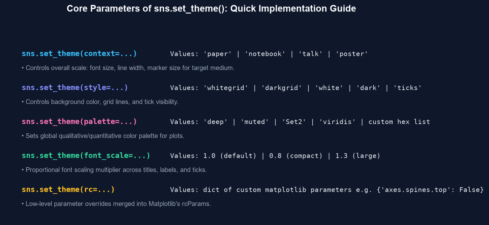
sns.set_theme() — A unified interface for scaling, styles, color palettes, and low-level rc overrides.| Parameter | Type & Default | Accepted Values | Functionality & Visual Impact |
|---|---|---|---|
context |
str = "notebook" |
"paper", "notebook", "talk", "poster" |
Plot elements ke relative scale ko control karta hai (font size, line thickness, marker radius). |
style |
str = "darkgrid" |
"whitegrid", "darkgrid", "white", "dark", "ticks" |
Canvas background color, gridline visibility, aur axis ticks coordinate appearance set karta hai. |
palette |
str / list = "deep" |
Named palettes ("Set2", "viridis") ya custom hex list (['#2563eb', ...]) |
Plots ke categorical/quantitative color palette ko globally bind karta hai. |
font_scale |
float = 1.0 |
e.g. 0.8 (compact), 1.2 (large) |
Context scale ke upar ek extra proportional font multiplier apply karta hai. |
rc |
dict = None |
Dictionary of Matplotlib parameters | Low-level parameters override karta hai (e.g. {"axes.spines.right": False, "grid.alpha": 0.5}). |
Example 3.1 — College Academic Dashboard Setup
Dekhiye kaise ek production-ready college analysis script me sns.set_theme() configure kiya jata hai:
import seaborn as sns
import matplotlib.pyplot as plt
import pandas as pd
df_college = pd.read_csv("scratch/seaborn_topic4_data/college_performance.csv")
# Configure professional theme in one single call
sns.set_theme(
context="notebook",
style="whitegrid",
palette="Set2",
font_scale=1.05,
rc={
"axes.edgecolor": "#cbd5e1",
"grid.color": "#e2e8f0",
"grid.linestyle": "--",
"axes.titlesize": 13,
"axes.titleweight": "bold"
}
)
fig, ax = plt.subplots(figsize=(7, 4), dpi=140)
sns.barplot(
data=df_college, x="department", y="exam_marks",
hue="department", legend=False, ax=ax, errorbar="sd"
)
ax.set_title("Executive Department Marks Comparison")
ax.set_xlabel("Engineering Department")
ax.set_ylabel("Mean Exam Marks (± SD)")
plt.tight_layout()
plt.show()
print("Applied theme style:", plt.rcParams['axes.facecolor'])
print("Grid linestyle:", plt.rcParams['grid.linestyle'])🖌 04. The 5 Built-in Seaborn Styles (Deep Dive & Use Cases)
Seaborn aapko 5 predefined background and grid visual styles provide karta hai via sns.set_style(style_name) ya sns.set_theme(style=style_name):
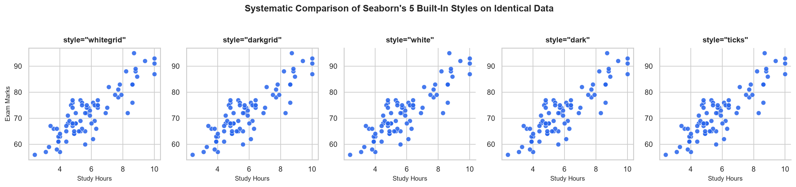
1. "whitegrid" — The Executive Gold Standard
White background ke sath light gray gridlines. High contrast provide karta hai aur printed reports ya executive web dashboards ke liye universal choice hai:
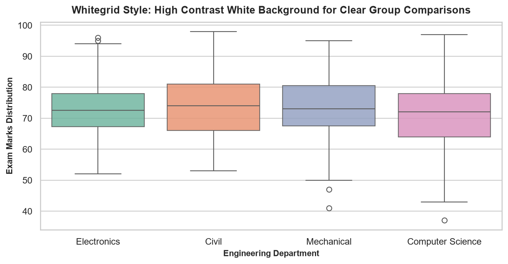
style="whitegrid" — Maximum contrast with subtle horizontal guidance for categorical boxplots and bar charts.2. "darkgrid" — The Default Exploratory Style
Muted light gray background ke sath crisp white gridlines. Iska main benefit yeh hai ki dense scatter plots aur continuous regression lines background par easily distinguish ho jaati hain:
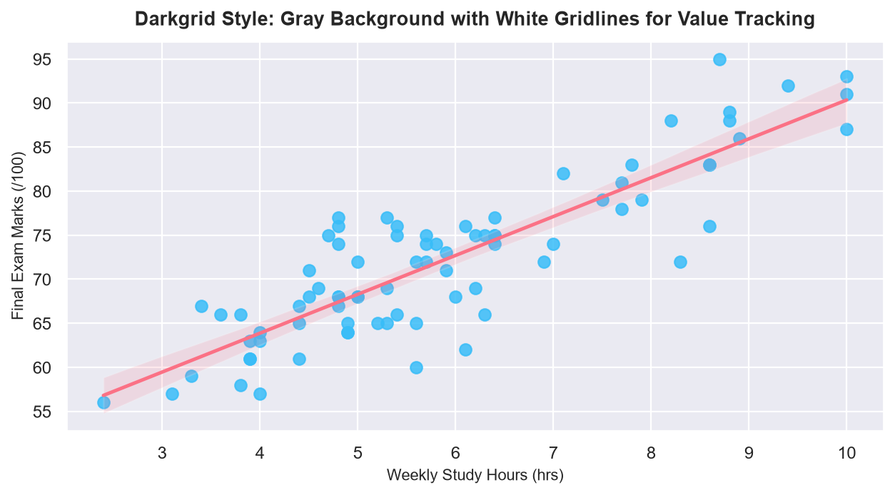
style="darkgrid" — Soft light gray canvas minimizes eye fatigue during long exploratory data analysis sessions.3. "white" & "ticks" — Academic & Minimalist Publishing
Jab aapko cleaner, uncluttered visual hierarchy chahiye (jaise scientific journals ya books me), tab gridlines ko eliminate karke white ya ticks use kiya jata hai. Inke sath sns.despine() combine karne se top aur right borders trim ho jaate hain:
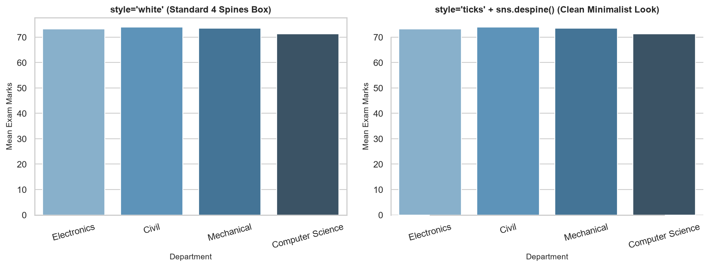
style="white" vs. style="ticks" + sns.despine() — Removing unnecessary borders focuses 100% of viewer attention on data bars.The 5 Styles Decision Matrix
| Style Name | Canvas Color | Grid Lines | Axis Ticks | Recommended Chart Types |
|---|---|---|---|---|
"whitegrid" |
Pure White (#ffffff) |
Subtle Gray Grid | Hidden | Bar plots, Boxplots, Violin plots, Executive Dashboards. |
"darkgrid" |
Light Gray (#eaeaf2) |
Clean White Grid | Hidden | Dense Scatter plots, Multi-line regression, Exploratory analysis. |
"white" |
Pure White (#ffffff) |
None (No Grids) | Hidden | Histograms, Categorical counts, Pie/Donut charts where grids distract. |
"ticks" |
Pure White (#ffffff) |
None (No Grids) | Visible Outward Ticks | Scientific papers, Research publications (pairs with despine()). |
"dark" |
Light Gray (#eaeaf2) |
None (No Grids) | Hidden | Specialized continuous spatial heatmaps and geometric cluster plots. |
🔍 05. Scaling Contexts: sns.set_context() for Target Mediums
Aapne ek perfect chart banaya jo aapke laptop screen par bohot sundar lag raha hai. Lekin jab aapne use ek Conference Slide Presentation me projector par display kiya, toh back row me baithe audience members ko labels bilkul dikhai nahi diye! Ya jab aapne use A4 PDF Research Paper me paste kiya, toh text itna huge tha ki pura chart overlap ho gaya.
Yahi problem solve karta hai Context Scaling via sns.set_context(). Context data ko touch kiye bina automatically pure chart ke visual elements (labels, titles, line widths, marker sizes) ko target medium ke mutabiq proportionally scale up ya scale down karta hai:
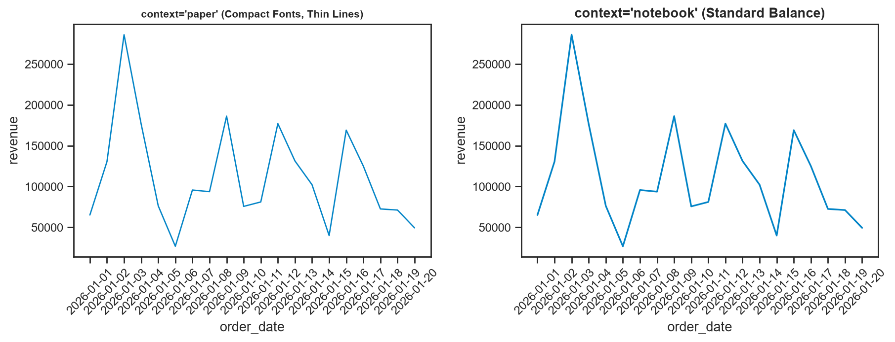
context="paper" (Compact for Multi-Column PDF Documents) vs. context="notebook" (Standard Balance for Screen Reading).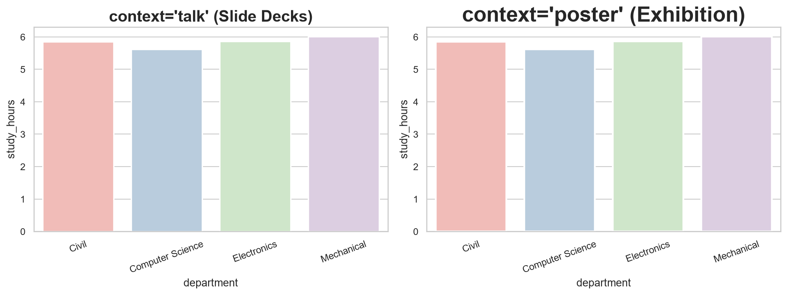
context="talk" (High Visibility for PPT Slide Decks) vs. context="poster" (Giant Display Scaling for Conference Banners).The 4 Standard Contexts Hierarchy
| Context Name | Relative Scale | Base Font Size | Line Width Multiplier | Primary Delivery Medium |
|---|---|---|---|---|
"paper" |
0.8x |
Small (9.5pt) | Thin (1.0x) | Academic papers, 2-column IEEE/ACM PDFs, compact printed reports. |
"notebook" |
1.0x (Default) |
Medium (11pt) | Standard (1.2x) | Jupyter Notebooks, web browser dashboards, mobile tablets. |
"talk" |
1.3x |
Large (14pt) | Thick (1.7x) | Keynote / PowerPoint presentations, Zoom webinars, classroom lectures. |
"poster" |
1.6x |
Extra Large (18pt) | Heavy (2.2x) | Printed exhibition posters, conference billboards, wall charts. |
sns.set_context() elements ke font sizes aur line weights ko scale karta hai, lekin yeh plt.subplots(figsize=(W, H)) canvas dimensions ko expand nahi karta! Agar aapne ek small (4, 3) figure par context="poster" laga diya, toh labels figure canvas se bahar overflow ho jayenge. Hamesha large context ke sath proportionally larger figsize define karein (e.g. figsize=(12, 7)).
🎨 06. Customizing Color Palettes: sns.color_palette() & sns.set_palette()
Data visualization me color sirf decorative visual feature nahi hota; color ek data-encoding channel hai. Galat colors viewer ko confuse karte hain, jabki thoughtful colors insights ko instantly intuitive bana dete hain. Seaborn color palettes ko manage karne ke liye do primary functions deta hai:
sns.color_palette(palette_name, n_colors): Palettes ko inspect karne, slice karne, ya colors ki list retrieve karne ke liye use hota hai.sns.set_palette(palette_name): Future sabhi plots ke liye global default color sequence set karne ke liye use hota hai.
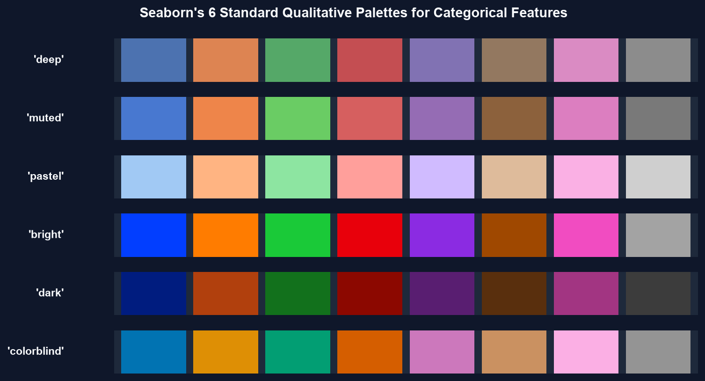
The 6 Core Qualitative Palettes Overview
| Palette Name | Color Characteristics | Best Use Cases |
|---|---|---|
"deep" |
Rich, saturated, well-balanced standard tones. (Default Seaborn palette). | General purpose categorical comparisons with strong visual presence. |
"muted" |
Subtle, lower saturation, elegant tones. | Executive reports where loud aggressive colors would look unprofessional. |
"pastel" |
Soft, light, high-luminance baby tones. | Large filled areas (e.g. density plots, background heatmaps, stacked bars). |
"bright" |
Vivid, high-energy, eye-catching hues. | Highlighting urgent metrics, critical alerts, or presentations on dim screens. |
"dark" |
Deep, high-contrast, low-luminance shades. | Printed white paper documents where pale colors might wash out. |
"colorblind" |
Scientifically calibrated hues distinguishable by all color vision types. | Public dashboards, accessibility compliance (WCAG), medical and educational reports. |
import seaborn as sns
import matplotlib.pyplot as plt
# 1. Inspect palette as a list of RGB hex tuples
colors = sns.color_palette("colorblind", 4)
print("Generated 4 colorblind-safe RGB tuples:")
for i, c in enumerate(colors):
hex_code = f"#{int(c[0]*255):02x}{int(c[1]*255):02x}{int(c[2]*255):02x}"
print(f" Color {i+1}: {c} -> {hex_code}")
# 2. Globally set palette
sns.set_palette("colorblind")
print("\nGlobal palette successfully updated to 'colorblind'!")🔬 07. The Three Major Palette Families: Categorical, Sequential & Diverging
Data visualization theory me har dataset ek specific mathematical category me belong karta hai. Seaborn me 3 fundamentally distinct palette families exist karti hain:
| Family | Data Nature | Visual Mechanism | Standard Palette Examples |
|---|---|---|---|
| 1. Categorical (Qualitative) | Nominal / Unordered groups (Departments, Cities, Payment Methods) | Different hues with similar perceived brightness so no category looks "more important". | "Set2", "tab10", "deep", "colorblind" |
| 2. Sequential | Numeric / Quantitative magnitude progressing from Low to High | Smooth gradient from light (low) to dark/vivid (high). | "Blues", "viridis", "mako", "rocket" |
| 3. Diverging | Two-sided numerical values with a critical neutral Midpoint (0, Pass Cutoff) | Two contrasting colors at extremes meeting at a neutral pale center. | "coolwarm", "vlag", "icefire", "RdBu" |
A. Categorical Palettes in Action
Jab aap college departments ya product categories compare karte hain, toh categorical palette use karein taaki har group clearly distinct dikhe:
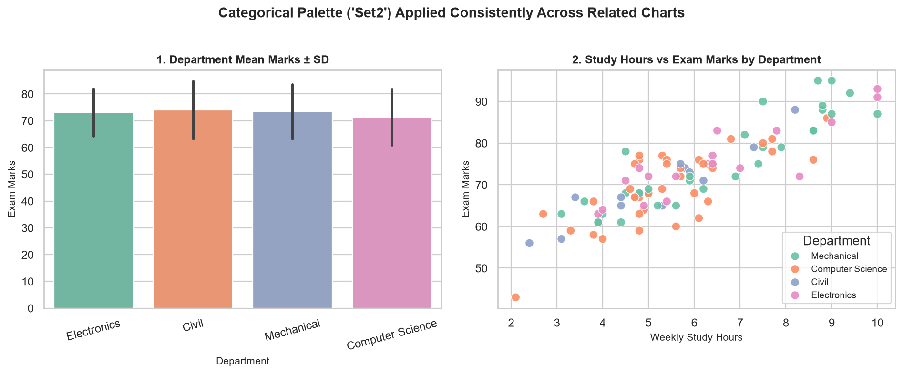
B. Sequential Palettes in Action
Jab aap numerical magnitude (jaise Total Order Revenue ya Customer Ratings) encode karte hain, toh continuous sequential gradient use karein:
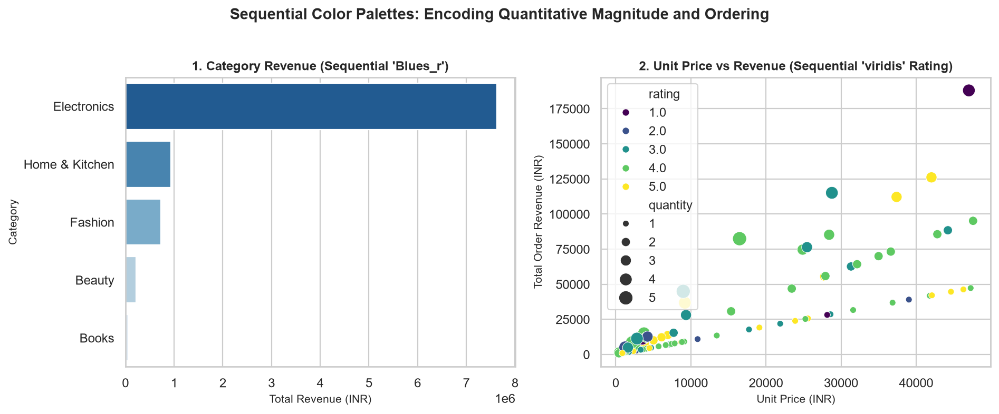
C. Diverging Palettes in Action
Diverging palettes tab mandatory hote hain jab data kisi central threshold ya target ke around fluctuate karta hai (jaise Exam Pass Cutoff se ± Marks deviation):
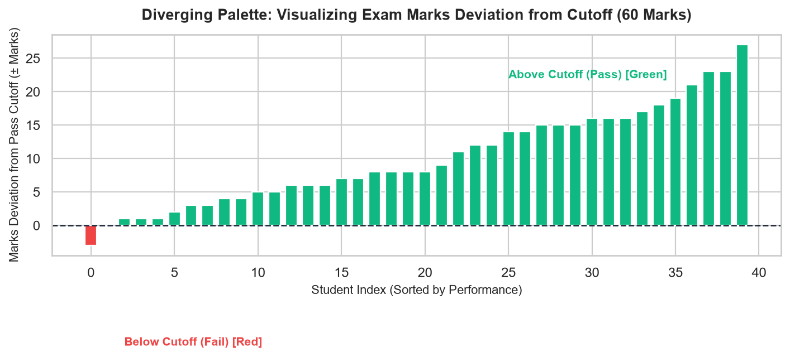
Diverging palette lagane ka matlab tabhi hota hai jab aapka data ek real neutral center point (e.g. center=0 ya vmin=-20, vmax=+20) ke around balance ho! Agar aap arbitrary positive data par diverging palette bina midpoint define kiye apply karenge, toh neutral center ek random data point par set ho jayega jo viewer ko severely misguide karega.
🎸 08. Custom Colors & Category Mapping: Bulletproof Dashboard Identity
Real-world company projects me client ke specific Corporate Brand Colors hote hain. Saath hi ek professional dashboard me sabse badi requirement yeh hoti hai ki "Electronics" hamesha Royal Blue ho, chahe woh Revenue chart ho, Customer Rating chart ho, ya Monthly Trend chart ho!
Agar aap standard named palette use karenge aur kisi chart me ek category missing ho gayi, toh Seaborn automatically colors shift kar dega. Is problem ko eliminate karne ke liye Seaborn me Explicit Dictionary Color Mapping use kiya jata hai:
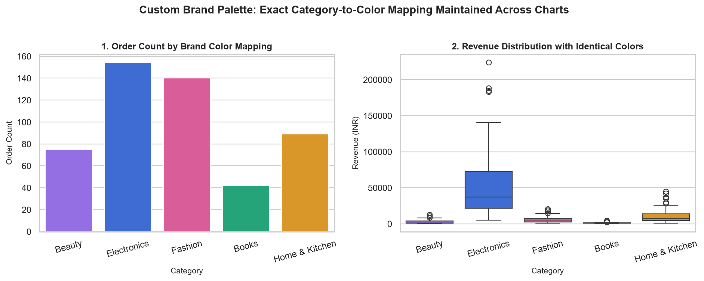
import seaborn as sns
import matplotlib.pyplot as plt
import pandas as pd
df_ecom = pd.read_csv("scratch/seaborn_topic4_data/ecommerce_sales.csv")
# Define corporate brand palette dictionary
brand_colors = {
"Electronics": "#2563eb", # Royal Blue
"Home & Kitchen": "#f59e0b", # Amber
"Fashion": "#ec4899", # Pink
"Beauty": "#8b5cf6", # Purple
"Books": "#10b981" # Emerald Green
}
fig, axes = plt.subplots(1, 2, figsize=(11, 4.2), dpi=140)
# IMPORTANT: In Seaborn 0.13.2, when passing palette to categorical plots,
# always pass hue=category and legend=False to prevent FutureWarnings!
sns.barplot(
data=df_ecom, x="category", y="revenue",
hue="category", palette=brand_colors, legend=False,
ax=axes[0], errorbar=None
)
axes[0].set_title("Category Mean Revenue (INR)", fontweight="bold")
axes[0].tick_params(axis='x', rotation=15)
sns.boxplot(
data=df_ecom, x="category", y="unit_price",
hue="category", palette=brand_colors, legend=False,
ax=axes[1]
)
axes[1].set_title("Unit Price Distribution (INR)", fontweight="bold")
axes[1].tick_params(axis='x', rotation=15)
plt.tight_layout()
plt.show()
print("Verified Brand Mapping Categories:", list(brand_colors.keys()))Agar aapke bar chart ya histogram me grouping variable (hue) nahi hai, toh multiple colors (rainbow styling) use na karein! Ek clean single color pass karein via color="#0284c7". Rainbow bars without meaning cognitive load badhate hain.
✂ 09. Matplotlib Axes & Spine Styling: The Power of sns.despine()
Seaborn plots Matplotlib ke standard Axes objects par draw hote hain. Iska matlab hai ki aap Seaborn ke automatic statistical estimation ka maza lete hue Matplotlib ke fine-grained object-oriented control ka full advantage le sakte hain:
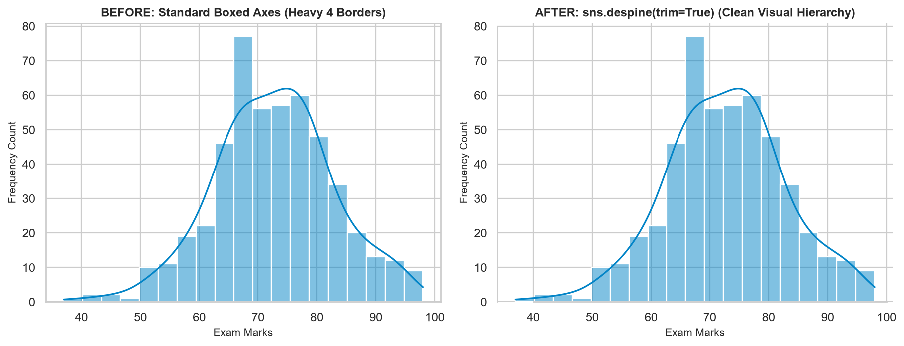
sns.despine() Before and After — Eliminating unnecessary top and right axis spines creates an uncluttered, modern visual hierarchy.Essential Axes Customization Methods
| Customization Tool | Syntax Pattern | Visual Benefit |
|---|---|---|
| Spine Trimming | sns.despine(top=True, right=True, trim=True) |
Cluttered box border ko remove karke visual airiness aur focus provide karta hai. |
| Axis Labels & Units | ax.set_xlabel("Study Hours (hrs)", fontsize=11, fontweight="bold") |
Raw dataframe column names (study_hrs) ko human-readable title banata hai. |
| Tick Formatting | ax.tick_params(axis="x", rotation=25, labelsize=9.5) |
Overlapping text labels ko tilt karke 100% collision-free readable banata hai. |
| Gridline Tuning | ax.grid(axis="y", linestyle="--", alpha=0.5) |
Only horizontal guidance lines retain karta hai, vertical noise strip kar deta hai. |
| Canvas Padding | plt.tight_layout() ya fig.subplots_adjust(top=0.92) |
Master title, subplot titles, aur rotated labels ke beech clipping eliminate karta hai. |
import seaborn as sns
import matplotlib.pyplot as plt
import pandas as pd
df_college = pd.read_csv("scratch/seaborn_topic4_data/college_performance.csv")
sns.set_theme(style="ticks")
fig, ax = plt.subplots(figsize=(7, 3.8), dpi=140)
sns.histplot(df_college["exam_marks"], kde=True, color="#0284c7", ax=ax)
# Spine trimming
sns.despine(ax=ax, top=True, right=True, trim=True)
# Precision labeling
ax.set_title("Student Exam Performance Distribution", fontsize=12, fontweight="bold", pad=10)
ax.set_xlabel("Final Exam Marks (/100)", fontsize=10, fontweight="bold")
ax.set_ylabel("Student Count", fontsize=10, fontweight="bold")
ax.grid(axis="y", linestyle=":", alpha=0.6)
plt.tight_layout()
plt.show()
print("Top spine visible:", ax.spines['top'].get_visible())
print("Right spine visible:", ax.spines['right'].get_visible())📝 10. Typography, Font Scaling & Long Label Readability
Ek visualization kitni bhi colorful kyun na ho, agar viewer uske numbers aur labels padh hi na sake, toh chart completely useless ho jata hai. Typography chart ki clarity aur professionalism ki backbone hai:
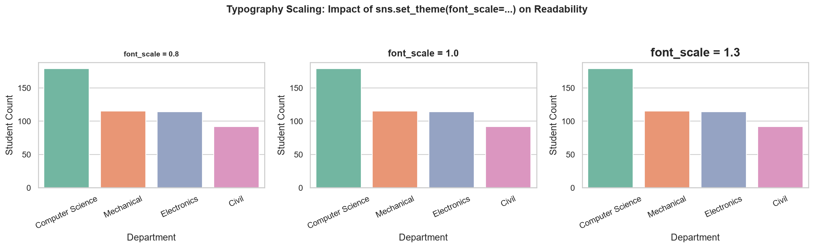
font_scale=0.8 (compact), 1.0 (standard), and 1.3 (large display).3 Proven Techniques to Prevent Label Overlap
Real-world datasets me category names aksar lambi hoti hain (jaise "Information Technology & Computer Applications"). Inhe X-axis par fit karne ke 3 reliable solutions hain:
- Angle Rotation:
ax.tick_params(axis="x", rotation=25)yaplt.xticks(rotation=30, ha="right"). - Horizontal Bar Orientation: Category ko Y-axis par aur numbers ko X-axis par plot karein (
y="category", x="revenue"). Yeh lambi text strings ke liye industry standard solution hai! - Text Wrapping: Python ke standard
textwrap.fill(s, width=15)module se labels ko multiple lines me split karein.
import seaborn as sns
import matplotlib.pyplot as plt
import pandas as pd
categories = [
"Consumer Electronics & Accessories",
"Home Furnishing & Kitchen Appliances",
"Men & Women Fashion Apparel",
"Cosmetics & Personal Grooming"
]
sales = [7622928.22, 929679.85, 724556.67, 216799.20]
df_long_names = pd.DataFrame({"cat": categories, "sales": sales})
sns.set_theme(style="whitegrid", font_scale=0.95)
fig, ax = plt.subplots(figsize=(8.5, 3.8), dpi=140)
# Horizontal orientation completely eliminates text collision!
sns.barplot(data=df_long_names, y="cat", x="sales",
hue="cat", legend=False, palette="Blues_r", ax=ax)
ax.set_title("Horizontal Layout for Long Category Names", fontweight="bold")
ax.set_xlabel("Total Sales (INR)")
ax.set_ylabel("") # Remove redundant label
plt.tight_layout()
plt.show()
print("Plotted categories with zero label overlap:", len(categories))📍 11. Legends, Annotations & Callouts: Highlighting What Matters
Aapke chart ka visual purpose tab accomplish hota hai jab viewer bina kisi guide ke turant samajh jaye ki graph ka focal point kahan hai. Seaborn aur Matplotlib iske liye do surgical tools provide karte hain: Precision Legend Controls aur Data-Driven Annotations:
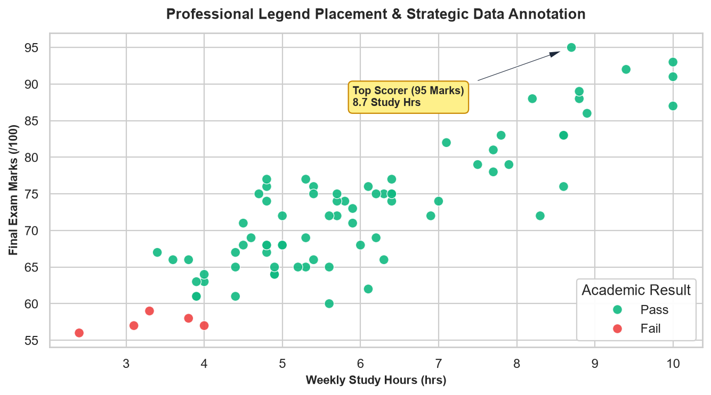
Guidelines for Professional Annotations
- Har point ko annotate na karein: Agar aap har data point par text box chipka denge, toh chart cluttered black noise ban jayega. Sirf Max, Min, Critical Threshold, ya Outliers ko annotate karein.
- Arrow pointer use karein:
xy=(target_x, target_y)target point define karta hai aurxytext=(offset_x, offset_y)text label ki position define karta hai.arrowprops=dict(facecolor=..., shrink=0.05)clean arrow draw karta hai. - Horizontal Benchmarks: Pass/Fail criteria ya budget targets ke liye
ax.axhline(target_value, color="red", linestyle="--")use karein.
import seaborn as sns
import matplotlib.pyplot as plt
import pandas as pd
df_college = pd.read_csv("scratch/seaborn_topic4_data/college_performance.csv")
sample = df_college.sample(60, random_state=42)
sns.set_theme(style="whitegrid")
fig, ax = plt.subplots(figsize=(7.5, 4.2), dpi=140)
sns.scatterplot(
data=sample, x="study_hours", y="exam_marks",
hue="result", palette={"Pass": "#10b981", "Fail": "#ef4444"},
s=60, ax=ax
)
# Cutoff line
ax.axhline(60.0, color="#ef4444", linestyle="--", label="Pass Cutoff (60)")
# Find Top Student
top_row = sample.loc[sample["exam_marks"].idxmax()]
ax.annotate(
f"Top Performer: {top_row['exam_marks']:.0f} Marks",
xy=(top_row["study_hours"], top_row["exam_marks"]),
xytext=(top_row["study_hours"] - 2.5, top_row["exam_marks"] - 6),
arrowprops=dict(facecolor="#1e293b", shrink=0.08, width=1.5, headwidth=6),
fontweight="bold", fontsize=9,
bbox=dict(boxstyle="round,pad=0.3", facecolor="#fef08a", edgecolor="#ca8a04")
)
ax.set_title("Annotated Student Marks & Study Hours", fontweight="bold")
ax.set_xlabel("Weekly Study Hours (hrs)")
ax.set_ylabel("Exam Marks")
ax.legend(loc="lower right")
plt.tight_layout()
plt.show()
print(f"Top student identified: {top_row['student_id']} with {top_row['exam_marks']:.1f} marks.")🖋 12. Maintaining Consistent Styling Across Multi-Panel Dashboards
Ek professional dashboard sirf standalone charts ka collection nahi hota; woh ek cohesive visual story hota hai. Agar aapke 4-panel dashboard me ek chart darkgrid me ho, dusra white me ho, ek me font size 14pt ho aur dusre me 8pt ho, toh viewer ka mental focus visual dissonance me waste ho jata hai:
The 5 Rules of Multi-Plot Visual Cohesion
- Single Master Theme: Pure dashboard ke liye ek single
sns.set_theme(style="whitegrid")define karein. - Persistent Category Colors: Har chart me agar Department ya Category dikh rahi hai, toh wahi exact hex color represent kare (e.g.
brand_colorsmapping). - Synchronized Typography: Sabhi subplot titles ka font size aur weight identical rakhein (e.g.
fontsize=11, fontweight="bold"). - Shared Scale Normalization: Agar multiple plots same unit (jaise Exam Marks 0–100) measure kar rahe hain, toh shared Y-axis limits consider karein.
- Collision-Free Padding: Hamesha master title ke liye
fig.suptitle(..., y=0.98)aur subplots spacing ke liyefig.subplots_adjust(top=0.90, hspace=0.35, wspace=0.25)configure karein.
Jab aap multi-panel subplots (jaise 2x2 grid) banate hain aur fig.suptitle() add karte hain, toh naive plt.tight_layout() master title ko subplots ke upar overlap kar deta hai. Proper technique yeh hai: pehle plt.tight_layout() call karein, fir fig.subplots_adjust(top=0.90) lagayein!
🔮 13. Systematic Theme & Style Comparison Experiment
Styling me koi ek "universally best" theme nahi hoti; best choice aapke Data Characteristics aur Delivery Medium par depend karti hai. Aaiye identical student performance dataset par sabhi 5 styles ko objectively compare karein:
| Style | Strengths | Weaknesses | Best Production Fit |
|---|---|---|---|
"whitegrid" |
Highest contrast; horizontal gridlines accurate value reading facilitate karti hain; screen aur print dono par crisp. | Thick dense data me lines gridlines ke sath interact kar sakti hain. | Corporate executive dashboards, Web analytics apps, SaaS products. |
"darkgrid" |
Soft gray background reduces eye fatigue; white grids high-density scatter clusters ko standout karti hain. | Printed white paper par gray box clumsy lagta hai; ink consume karta hai. | Data science exploratory analysis, dark-mode software environments. |
"white" |
Ultra-clean; zero grid noise; maximum data-ink ratio (Edward Tufte principle). | Exact numeric values estimate karna mushkil hota hai bina axis alignment ke. | Slide decks, executive summary cards, marketing infographics. |
"ticks" |
Professional scientific journal standard; outward tick markers precise measurement points provide karte hain. | Requires manual sns.despine() for best visual balance. |
Academic research papers, IEEE/Nature publications, textbooks. |
"dark" |
Muted background without grid lines. | Rarely optimal for general business plots. | Geographic maps, continuous surface heatmaps, astronomical plots. |
♿ 14. Color Accessibility & Common Styling Disasters
Global statistics ke mutabiq lagbhag 8% men aur 0.5% women Color Vision Deficiency (CVD ya Colorblindness) se affect hote hain. Inme sabse common condition hoti hai Deuteranopia (Red-Green colorblindness). Agar aap Pass ke liye green aur Fail ke liye red use karte hain bina kisi secondary marker ke, toh CVD viewers ke liye dono colors ek jaise muddy brownish-yellow ban jaate hain!
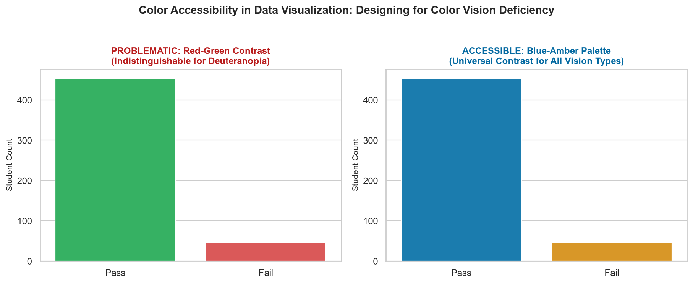
The Golden Rules of Accessible Visualization
- Dual Encoding (Color + Shape): Data points ko distinguish karne ke liye sirf
huepar rely na karein; sath mestyle="department"(different markers: circles, squares, triangles) add karein. - Colorblind-Friendly Palettes: Hamesha
palette="colorblind"yapalette="Blues"/palette="viridis"use karein. - Text Contrast: White background par light yellow ya light gray text kabhi use na karein.
8 Common Styling Disasters & Solutions
| # | Styling Disaster | Why It Is a Severe Problem | Recommended Solution |
|---|---|---|---|
| 1 | Rainbow Bar Plots | Single metric ke har bar ko alag color dena misleading impression deta hai ki har bar ek alag dimension represent kar raha hai. | Use single uniform color via color="#0284c7" unless hue encodes a real category. |
| 2 | Red-Green Pass/Fail | Deuteranopia viewers Pass aur Fail me fark nahi kar sakte. | Use palette={"Pass": "#0284c7", "Fail": "#f59e0b"} (Blue/Amber) or add text icons ✓ / ✘. |
| 3 | Unconstrained set_context() | Small figure canvas par "poster" context lagane se labels canvas ke bahar cut ho jaate hain. |
Scale figsize=(12, 7) whenever using "talk" or "poster" context. |
| 4 | Overlapping Subplot Titles | fig.suptitle() subplots ke upper titles ke upar render ho jata hai. |
Call fig.subplots_adjust(top=0.90) after plt.tight_layout(). |
| 5 | Random Category Shifting | Subplot 1 me "CS" blue hai, Subplot 2 me "CS" orange ban jata hai. | Define explicit dictionary mapping: palette=brand_colors. |
| 6 | Thick Box Spines | Charo taraf heavy black border chart ko boxed aur suffocated feel deta hai. | Apply sns.despine(top=True, right=True, trim=True) for modern airiness. |
| 7 | Diverging Palette without Midpoint | Zero-centered diverging palette arbitrary positive numbers par lagane se artificial split create hoti hai. | Always specify center=0.0 or appropriate physical benchmark. |
| 8 | Overcrowded Rotated X-Ticks | 40 categories ko 90 degree tilt karke dense barcode bana dena. | Filter top 10 categories or flip to horizontal layout (y="category"). |
🎓 15. Real-Life Case Study A: College Performance Dashboard
Aaiye ek complete production-grade 4-panel executive dashboard develop karein jo college administration ke liye student academic trends ko synthesize kare. Hum use karenge hamara verified dataset (500 students, Mean Marks 72.72, Study correlation 0.855):
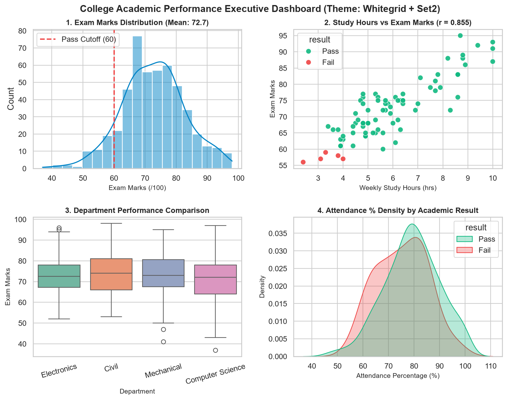
import seaborn as sns
import matplotlib.pyplot as plt
import pandas as pd
# Load verified dataset
df = pd.read_csv("scratch/seaborn_topic4_data/college_performance.csv")
# 1. Establish global theme
sns.set_theme(style="whitegrid", palette="Set2", font_scale=1.0)
# 2. Initialize 2x2 Subplot Grid
fig, axes = plt.subplots(2, 2, figsize=(12, 8), dpi=160)
# Top-Left: Marks Distribution
sns.histplot(df["exam_marks"], kde=True, color="#0284c7", ax=axes[0, 0])
axes[0, 0].axvline(60.0, color="#ef4444", linestyle="--", linewidth=1.8, label="Pass Cutoff (60)")
axes[0, 0].set_title("1. Exam Marks Distribution (Mean: 72.7)", fontweight="bold", fontsize=11)
axes[0, 0].set_xlabel("Exam Marks (/100)")
axes[0, 0].legend(loc="upper left")
# Top-Right: Study Hours vs Exam Marks (r = 0.855)
sns.scatterplot(
data=df.sample(80, random_state=42), x="study_hours", y="exam_marks",
hue="result", palette={"Pass": "#10b981", "Fail": "#ef4444"},
s=55, alpha=0.9, ax=axes[0, 1]
)
axes[0, 1].set_title("2. Study Hours vs Exam Marks (r = 0.855)", fontweight="bold", fontsize=11)
axes[0, 1].set_xlabel("Weekly Study Hours (hrs)")
axes[0, 1].set_ylabel("Exam Marks")
# Bottom-Left: Department Boxplot
sns.boxplot(
data=df, x="department", y="exam_marks",
hue="department", palette="Set2", legend=False, ax=axes[1, 0]
)
axes[1, 0].set_title("3. Department Performance Comparison", fontweight="bold", fontsize=11)
axes[1, 0].set_xlabel("Department")
axes[1, 0].tick_params(axis='x', rotation=15)
# Bottom-Right: Attendance Density by Result
sns.kdeplot(
data=df, x="attendance_percentage", hue="result",
palette={"Pass": "#10b981", "Fail": "#ef4444"},
fill=True, common_norm=False, alpha=0.3, ax=axes[1, 1]
)
axes[1, 1].set_title("4. Attendance % Density by Academic Result", fontweight="bold", fontsize=11)
axes[1, 1].set_xlabel("Attendance Percentage (%)")
# Master Title & Collision-Free Spacing
fig.suptitle("College Academic Performance Executive Dashboard (Theme: Whitegrid + Set2)", fontsize=13.5, fontweight="bold")
plt.subplots_adjust(top=0.92, hspace=0.35, wspace=0.25)
plt.savefig("scratch/case_study_college_dashboard.png", dpi=160, bbox_inches="tight")
plt.show()
print("Dashboard generated with 4 synchronized subplots.")🛒 16. Real-Life Case Study B: E-Commerce Sales & Revenue Dashboard
Retail e-commerce companies me multi-million rupee revenue streams ko track karne ke liye visual dashboards ki zaroorat hoti hai. Yeh case study dikhati hai ki brand colors ko persistent kaise rakha jata hai:
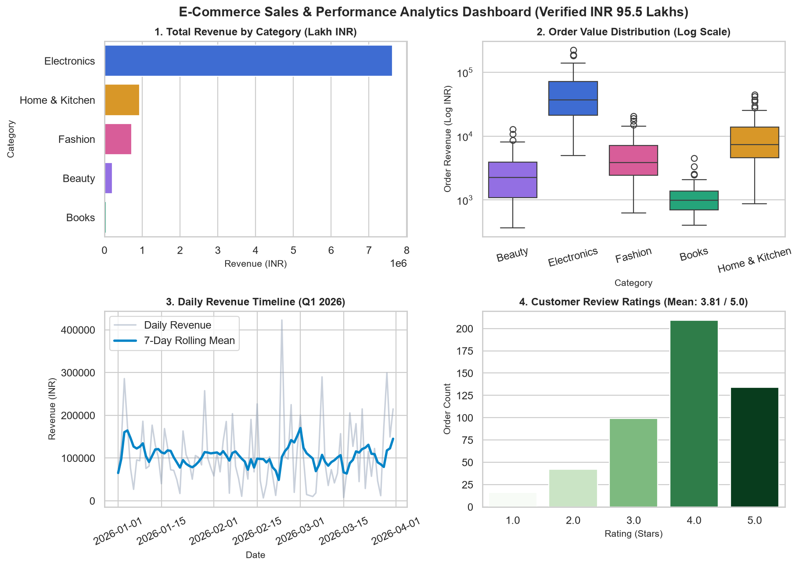
import seaborn as sns
import matplotlib.pyplot as plt
import pandas as pd
df_ecom = pd.read_csv("scratch/seaborn_topic4_data/ecommerce_sales.csv")
brand_colors = {
"Electronics": "#2563eb", # Royal Blue
"Home & Kitchen": "#f59e0b", # Amber
"Fashion": "#ec4899", # Pink
"Beauty": "#8b5cf6", # Purple
"Books": "#10b981" # Green
}
sns.set_theme(style="whitegrid")
fig, axes = plt.subplots(2, 2, figsize=(12.5, 8.2), dpi=160)
# 1. Total Revenue by Category (Horizontal Bar)
cat_rev = df_ecom.groupby("category")["revenue"].sum().reset_index().sort_values("revenue", ascending=False)
sns.barplot(data=cat_rev, y="category", x="revenue", hue="category", legend=False, palette=brand_colors, ax=axes[0, 0])
axes[0, 0].set_title("1. Total Revenue by Category (INR)", fontweight="bold")
# 2. Revenue Distribution (Log Scale Boxplot)
sns.boxplot(data=df_ecom, x="category", y="revenue", hue="category", legend=False, palette=brand_colors, ax=axes[0, 1])
axes[0, 1].set_yscale("log")
axes[0, 1].set_title("2. Order Value Distribution (Log Scale)", fontweight="bold")
axes[0, 1].tick_params(axis='x', rotation=15)
# 3. 7-Day Rolling Revenue Trend
df_daily = df_ecom.groupby("order_date")["revenue"].sum().reset_index()
df_daily["order_date"] = pd.to_datetime(df_daily["order_date"])
df_daily = df_daily.sort_values("order_date")
df_daily["rolling_rev"] = df_daily["revenue"].rolling(7, min_periods=1).mean()
axes[1, 0].plot(df_daily["order_date"], df_daily["revenue"], color="#94a3b8", alpha=0.5, label="Daily")
axes[1, 0].plot(df_daily["order_date"], df_daily["rolling_rev"], color="#0284c7", linewidth=2.4, label="7-Day Rolling")
axes[1, 0].set_title("3. Daily Revenue Timeline (Q1 2026)", fontweight="bold")
axes[1, 0].tick_params(axis='x', rotation=25)
axes[1, 0].legend()
# 4. Customer Rating Breakdown
sns.countplot(data=df_ecom, x="rating", hue="rating", legend=False, palette="Greens", ax=axes[1, 1])
axes[1, 1].set_title("4. Customer Review Ratings (Mean: 3.81 / 5.0)", fontweight="bold")
fig.suptitle("E-Commerce Sales & Performance Analytics Dashboard", fontsize=13.5, fontweight="bold")
plt.subplots_adjust(top=0.92, hspace=0.38, wspace=0.25)
plt.savefig("scratch/case_study_ecommerce_dashboard.png", dpi=160, bbox_inches="tight")
plt.show()
print("Total Verified Revenue Plotted:", df_ecom["revenue"].sum())🚨 17. 16 Common Styling Pitfalls & Copy-Paste Fixes
Experienced developers aur beginners dono styling karte waqt in 16 common traps me phaste hain. Inke verified solutions save karke rakhein:
| # | Common Pitfall | Why It Breaks Visualization | Copy-Paste Verified Fix |
|---|---|---|---|
| 1 | sns.set() Warning |
Seaborn 0.11+ me sns.set() deprecated ho chuka hai. |
sns.set_theme(...) use karein. |
| 2 | Overlapping rotated labels | Labels right-aligned na hone par tick marker ke upar draw ho jaate hain. | plt.xticks(rotation=30, ha="right") |
| 3 | Missing hue warning with palette | Seaborn 0.13.2 me categorical palette bina hue pass karne par FutureWarning fekta hai. |
sns.barplot(..., hue="cat", legend=False, palette="Set2") |
| 4 | Unintended global style leak | Ek chart ka darkgrid baaki sabhi plots ko corrupt kar deta hai. |
with sns.axes_style("darkgrid"): context manager use karein. |
| 5 | Suptitle clipping subplots | plt.tight_layout() master title ko consider nahi karta. |
plt.tight_layout() ke baad fig.subplots_adjust(top=0.90) lagayein. |
| 6 | Invisible text on dark theme | Dark theme me Matplotlib ke hardcoded black labels blend ho jaate hain. | Use Seaborn themes jo automatically text colors adapt karti hain. |
| 7 | Rainbow bar chart | Har bar alag color me hone se fake categorical meaning convey hoti hai. | Single metric par color="#0284c7" use karein. |
| 8 | Diverging palette on positive data | Sales values ($>0$) par coolwarm lagane se middle value fake zero ban jaati hai. |
Use sequential palette ("Blues" ya "viridis"). |
| 9 | Category colors flipping across charts | Subplot 1 me "Books" green tha, Subplot 2 me "Books" pink ban gaya. | Define explicit dictionary: palette={"Books": "#10b981", ...}. |
| 10 | Huge text in compact figure | context="poster" small figsize=(4, 3) par lagane se canvas explode ho jata hai. |
Scale figure dimensions proportionally: figsize=(12, 7). |
| 11 | Missing units on axes | Axis par sirf revenue likha hai (Rupees, Dollars, ya Thousands?). |
ax.set_ylabel("Total Revenue (INR in Lakhs)") |
| 12 | Red-Green pass/fail trap | Colorblind users Pass aur Fail distinguish nahi kar sakte. | Use Blue/Amber pair: {"Pass": "#0284c7", "Fail": "#f59e0b"}. |
| 13 | Duplicate legend entries | Multiple subplots me exact same legend bar-bar repeat hona. | Keep legend on one primary plot; turn others off via legend=False. |
| 14 | Heavy distracting gridlines | Thick dark gridlines scatter points ke sath visually collide karti hain. | Set rc={"grid.alpha": 0.4, "grid.linestyle": ":"}. |
| 15 | Cluttered data point annotations | Har observation par text box daal dena. | Only annotate extremes (Max, Min, or Outliers) with clean arrows. |
| 16 | Low-DPI blurry exported figures | Default 72 DPI images mobile screens par pixelated lagti hain. | Hamesha plt.savefig(..., dpi=160, bbox_inches="tight") use karein. |
📋 18. Quick Reference: Seaborn Themes & Styling Cheat Sheet
Yeh comprehensive reference table aapko styling ke sabhi core dimensions, unke respective Seaborn commands, unke visual impact, aur quality validation checks ko summarize karke deta hai:
| Styling Dimension | Standard Seaborn / Matplotlib Command | Primary Visual Impact | Key Quality Assertion |
|---|---|---|---|
| Master Theme | sns.set_theme(style="whitegrid", palette="Set2", font_scale=1.0) |
Sets global background, gridlines, fonts, and colors for all subsequent plots. | Verify clean white canvas with subtle gridlines. |
| Canvas Style | sns.set_style("ticks") |
Switches background between whitegrid, darkgrid, white, dark, and ticks. |
Confirm appropriate contrast for target medium. |
| Display Context | sns.set_context("talk", font_scale=1.1) |
Scales labels, lines, and markers for paper, notebook, talk, or poster. |
Ensure text is legible from 10 feet on projectors. |
| Category Mapping | palette={"CS": "#2563eb", "IT": "#10b981"} |
Pins exact category-to-color mapping across multiple subplots. | Assert identical categories never swap colors. |
| Spine Trimming | sns.despine(top=True, right=True, trim=True) |
Removes distracting top and right box borders. | Top and right axis spines are completely hidden. |
| Label Rotation | ax.tick_params(axis="x", rotation=25) |
Angled text prevents label overlap for long category strings. | Confirm 0 overlapping characters across X-axis. |
| Strategic Annotation | ax.annotate("Peak", xy=(x, y), xytext=(x-2, y-5), arrowprops=...) |
Draws visual attention to key performance milestones or anomalies. | Arrow points accurately to ground-truth coordinates. |
| Canvas Padding | plt.tight_layout() + fig.subplots_adjust(top=0.90) |
Eliminates title collision and text clipping on figure edges. | Zero overlap between suptitle and subplot titles. |
import seaborn as sns
import matplotlib.pyplot as plt
def apply_production_styling(context: str = "notebook", font_scale: float = 1.0) -> None:
"""Configure robust, publication-grade styling for dashboards."""
sns.set_theme(
context=context,
style="whitegrid",
palette="colorblind",
font_scale=font_scale,
rc={
"axes.edgecolor": "#cbd5e1",
"grid.color": "#f1f5f9",
"grid.linestyle": "--",
"axes.titleweight": "bold",
"figure.autolayout": False
}
)
# Execute in any notebook cell:
# apply_production_styling(context="talk", font_scale=1.1)💡 19. 21 Interactive Practice Questions & Capstone Mini-Project
Pehle har question ko khud attempt karein, fir solution expand karke verified code aur common pitfalls compare karein:
Part 1: Conceptual Beginner Questions (Q1 – Q5)
Q1: sns.set_theme() aur sns.set_style() me kya fundamental difference hai?
Explanation: sns.set_style() sirf plot ke background aesthetic aur gridlines (e.g. whitegrid, darkgrid) ko change karta hai. Jabki sns.set_theme() ek master function hai jo style ke sath-sath context (scale), palette (colors), font_scale (typography), aur custom rc dictionary overrides ko single unified call me configure karta hai.
Q2: Default darkgrid background ka primary advantage kya hai?
Explanation: darkgrid ka soft light gray background white computer screens par eye strain ko drastically reduce karta hai. Saath hi white gridlines dense scatter points aur multi-variable regression curves ko visually obscure kiye bina reference lines provide karti hain.
Q3: sns.despine() kya karta hai aur kin styles ke sath pair hota hai?
Explanation: sns.despine() Matplotlib Axes ke top aur right border spines ko strip kar deta hai (by default top=True, right=True). Yeh primary tor par style="white" aur style="ticks" ke sath pair hota hai taaki scientific journals aur modern apps ke liye clean, uncluttered visual hierarchy establish ho sake.
Q4: Categorical qualitative palettes me sabhi colors ki luminance similar kyun honi chahiye?
Explanation: Agar ek category bohot dark/vivid ho aur doosri category light/faded ho, toh human perception automatically dark color ko "zyada important" ya "larger magnitude" consider karne lagti hai. Qualitative palettes (jaise Set2 ya deep) deliberate tor par balanced luminance maintain karti hain taaki sabhi nominal groups visually equal weight carry karein.
Q5: Har title aur label ko manually resize karne ke bajaye font_scale kyun prefer kiya jata hai?
Explanation: Manual sizing me aapko title, X-label, Y-label, tick labels, aur legend sabhi ke liye alag-alag fontsize=... specify karna padta hai jo easily miss ho jata hai. font_scale=1.2 ek universal multiplier hai jo pure chart ke typography hierarchy ko proportionately scale karta hai bina design balance bigaade.
Part 2: Analytical Intermediate Questions (Q6 – Q10)
Q6: Jab palette="Set2" pass karte hain aur hue nahi dete, toh Seaborn 0.13.2 warning kyun deta hai aur fix kya hai?
Explanation: Seaborn 0.13+ me bina hue ke multi-color bars draw karna deprecated ho raha hai kyunki single metric ko multiple colors me paint karna (rainbow bar chart) misleading hota hai. Fix:
# Method A: Agar grouping zaroori hai, pass explicit hue
sns.barplot(data=df, x="department", y="exam_marks", hue="department", palette="Set2", legend=False)
# Method B: Agar single metric hai, pass single clean color
sns.barplot(data=df, x="department", y="exam_marks", color="#0284c7")
Q7: Context manager with sns.axes_style(...): session bleeding kaise prevent karta hai?
Explanation: Direct sns.set_style("darkgrid") call karne par Matplotlib ka global rcParams mutate ho jata hai. Context manager with block ke enter hone par temporary style inject karta hai aur block exit hote hi purane global settings ko automatically restore kar deta hai.
Q8: Sequential vs. Diverging palettes me choice ka fundamental criteria kya hota hai?
Explanation: Sequential palette ("Blues") tab use hoti hai jab values strictly single direction (zero to max) progress karti hain. Diverging palette ("coolwarm") tab use hoti hai jab data me ek natural neutral midpoint (e.g. 0 profit/loss, 60 passing marks) hota hai aur values dono positive aur negative directions me diverge karti hain.
Q9: plt.tight_layout() master title ko kyun clip kar deta hai aur standard solution kya hai?
Explanation: plt.tight_layout() only individual Axes bounding boxes ko calculate karta hai aur fig.suptitle() ko ignore kar deta hai. Two-step standard formula:
fig.suptitle("Master Executive Dashboard", fontsize=14, fontweight="bold")
plt.tight_layout()
fig.subplots_adjust(top=0.90, hspace=0.35, wspace=0.25)Q10: Dual encoding (Color + Marker Shape) accessibility ke liye kyun essential hai?
Explanation: Colorblind viewers (ya black-and-white printouts me) alag-alag colors ke hue ko distinguish nahi kar sakte. Agar aap color ke sath style="department" (circle, square, triangle, cross) use karte hain, toh data point bina color ke bhi 100% uniquely identifiable rehta hai.
Part 3: Practical Coding Challenges (Q11 – Q13)
Q11: Coding Challenge: Custom Corporate Brand Palette — 4 departments ke liye dictionary mapping banayein aur bar & scatter plot karein.
import seaborn as sns
import matplotlib.pyplot as plt
import pandas as pd
df = pd.read_csv("scratch/seaborn_topic4_data/college_performance.csv")
dept_palette = {
"Computer Science": "#2563eb",
"Electronics": "#8b5cf6",
"Mechanical": "#f59e0b",
"Civil": "#10b981"
}
sns.set_theme(style="whitegrid")
fig, axes = plt.subplots(1, 2, figsize=(10, 4), dpi=140)
sns.barplot(data=df, x="department", y="exam_marks", hue="department",
palette=dept_palette, legend=False, ax=axes[0])
axes[0].set_title("Department Average Marks", fontweight="bold")
axes[0].tick_params(axis='x', rotation=20)
sns.scatterplot(data=df.sample(80, random_state=42), x="study_hours", y="exam_marks",
hue="department", palette=dept_palette, s=55, ax=axes[1])
axes[1].set_title("Study Hours vs Marks", fontweight="bold")
axes[1].legend(bbox_to_anchor=(1.05, 1), loc='upper left')
plt.tight_layout()
plt.show()
Q12: Coding Challenge: Presentation Scaling — set_context("talk") aur rotated labels ke sath monthly revenue plot karein.
import seaborn as sns
import matplotlib.pyplot as plt
import pandas as pd
df_ecom = pd.read_csv("scratch/seaborn_topic4_data/ecommerce_sales.csv")
df_daily = df_ecom.groupby("order_date")["revenue"].sum().reset_index().iloc[:15]
# Scale for PPT presentation
sns.set_theme(style="whitegrid")
sns.set_context("talk", font_scale=1.0)
plt.figure(figsize=(10, 5), dpi=140)
sns.lineplot(data=df_daily, x="order_date", y="revenue", marker="o", color="#0284c7", linewidth=2.5)
plt.title("High-Visibility Daily Revenue Trend (Q1)", fontweight="bold")
plt.xticks(rotation=35, ha="right")
plt.ylabel("Revenue (INR)")
plt.xlabel("Transaction Date")
plt.tight_layout()
plt.show()
sns.set_context("notebook") # ResetQ13: Coding Challenge: Surgical Annotation — Dataset ke top scorer student ko scatter plot par custom callout arrow se annotate karein.
import seaborn as sns
import matplotlib.pyplot as plt
import pandas as pd
df = pd.read_csv("scratch/seaborn_topic4_data/college_performance.csv")
top_student = df.loc[df["exam_marks"].idxmax()]
sns.set_theme(style="whitegrid")
fig, ax = plt.subplots(figsize=(7, 4), dpi=140)
sns.scatterplot(data=df.sample(70, random_state=42), x="study_hours", y="exam_marks", color="#38bdf8", ax=ax)
# Plot top student point
ax.scatter(top_student["study_hours"], top_student["exam_marks"], color="#ef4444", s=90, zorder=5)
# Annotate with callout box
ax.annotate(
f"Highest Mark: {top_student['exam_marks']:.0f}",
xy=(top_student["study_hours"], top_student["exam_marks"]),
xytext=(top_student["study_hours"] - 2.5, top_student["exam_marks"] - 7),
arrowprops=dict(facecolor="#1e293b", shrink=0.08, width=1.5, headwidth=6),
fontweight="bold", fontsize=9,
bbox=dict(boxstyle="round,pad=0.3", facecolor="#fef08a", edgecolor="#ca8a04")
)
ax.set_title("Performance Outlier Annotation", fontweight="bold")
plt.tight_layout()
plt.show()Part 4: Multiple Choice Questions (Q14 – Q18)
Q14: Which Seaborn function replaces the legacy sns.set() method in Seaborn 0.11+?
A) sns.set_all()
B) sns.set_theme()
C) sns.configure_theme()
D) sns.init_theme()
Reason: sns.set_theme() is the official modern entrypoint for configuring global styles, contexts, and palettes.
Q15: Which context has a relative scaling factor of 1.3x and is specifically designed for PowerPoint slide presentations?
A) "paper"
B) "notebook"
C) "talk"
D) "poster"
Reason: "talk" enlarges fonts (base ~14pt) and thickens plot lines so graphs remain clearly readable across lecture halls.
Q16: Why should red and green never be used as the sole distinction for Pass vs. Fail?
A) Red and green colors are slower for GPUs to render.
B) Deuteranopia (red-green colorblindness) affects approximately 8% of men, making both colors appear nearly identical.
C) Seaborn automatically throws an error when red and green are combined.
D) Matplotlib does not support red and green simultaneously.
Reason: Red-green pairings fail basic accessibility audits. Blue-amber pairings or dual shape encoding should always be preferred.
Q17: What does calling sns.despine(trim=True) do?
A) Removes the left Y-axis completely.
B) Removes top and right spines and limits bottom and left spines to the actual data range ticks.
C) Deletes all gridlines from the plot.
D) Rotates tick labels by 45 degrees.
Reason: trim=True trims the visible spine lines to span only between the minimum and maximum data tick markers, creating a minimalist look.
Q18: Customer review rating scores (1.0 to 5.0 stars) ko plot karne ke liye kaunsi palette family best hai?
A) Qualitative palette like "Set2"
B) Diverging palette centered at 0
C) Sequential palette like "Greens" or "viridis"
D) Random rainbow palette
Reason: Star ratings represent an ordered quantitative scale from poor to excellent; a sequential gradient naturally encodes this progression.
Part 5: Debugging Exercises (Q19 – Q20)
Q19: Debugging: Multi-panel dashboard me master suptitle upper subplots ke titles ko kat raha hai. Bug identify karein.
fig, axes = plt.subplots(2, 2, figsize=(10, 6))
fig.suptitle("Student Academic Performance", fontsize=14)
# Plotting subplots...
plt.tight_layout() # BUG: tight_layout expands subplots to the top boundary, colliding with suptitle!
plt.show()fig, axes = plt.subplots(2, 2, figsize=(10, 6))
fig.suptitle("Student Academic Performance", fontsize=14, fontweight="bold")
# Plotting subplots...
plt.tight_layout()
fig.subplots_adjust(top=0.90, hspace=0.35, wspace=0.25) # FIX: Reserve top 10% for master suptitle!
plt.show()Q20: Debugging: Category colors subplots ke beech randomly flip ho rahe hain. Bug identify karein.
# Subplot 1 has 4 categories -> CS is blue, IT is orange
sns.barplot(data=df_all, x="dept", y="marks", hue="dept", palette="Set2", ax=ax1)
# Subplot 2 filters out CS -> Now IT becomes blue! (Category colors shifted!)
df_filtered = df_all[df_all["dept"] != "Computer Science"]
sns.barplot(data=df_filtered, x="dept", y="marks", hue="dept", palette="Set2", ax=ax2)# Fix: Define persistent dictionary mapping
dept_colors = {"Computer Science": "#2563eb", "Information Tech": "#10b981", "Electronics": "#8b5cf6"}
sns.barplot(data=df_all, x="dept", y="marks", hue="dept", palette=dept_colors, ax=ax1)
sns.barplot(data=df_filtered, x="dept", y="marks", hue="dept", palette=dept_colors, ax=ax2)Question 21: Capstone Mini-Project
Question 21 — Capstone Mini-Project: "Theme Studio — Professional College and E-Commerce Dashboards"
Scenario: Aapko ek full production-ready Python script develop karni hai jo college academic dataset aur e-commerce sales dataset dono par uniform corporate visual styling establish kare. Pipeline requirements:
- Reproducible synthetic dataset load karein.
- Global theme configure karein (
style="whitegrid",font_scale=1.0). - Corporate color dictionary establish karein (persistent color across charts).
- Spines ko clean karein (
sns.despine()). - Key metric outlier par surgical arrow annotation add karein.
- Subplot collision eliminate karein via
fig.subplots_adjust(). - High-resolution figure save karein @ 160 DPI.
import seaborn as sns
import matplotlib.pyplot as plt
import pandas as pd
# 1. Load Data
df = pd.read_csv("scratch/seaborn_topic4_data/college_performance.csv")
# 2. Master Theme
sns.set_theme(style="whitegrid", palette="Set2", font_scale=1.0)
# 3. Persistent Color Map
dept_colors = {
"Computer Science": "#2563eb",
"Electronics": "#8b5cf6",
"Mechanical": "#f59e0b",
"Civil": "#10b981"
}
fig, axes = plt.subplots(1, 2, figsize=(12, 4.8), dpi=160)
# Left: Department Boxplot
sns.boxplot(data=df, x="department", y="exam_marks", hue="department",
palette=dept_colors, legend=False, ax=axes[0])
axes[0].set_title("1. Department Marks Distribution", fontweight="bold")
axes[0].set_xlabel("Department")
axes[0].set_ylabel("Exam Marks")
axes[0].tick_params(axis='x', rotation=15)
# Right: Study Hours vs Marks with Annotation
sns.scatterplot(data=df.sample(80, random_state=42), x="study_hours", y="exam_marks",
hue="department", palette=dept_colors, s=60, alpha=0.9, ax=axes[1])
axes[1].set_title("2. Study Hours vs Exam Marks", fontweight="bold")
axes[1].set_xlabel("Weekly Study Hours")
axes[1].set_ylabel("Exam Marks")
axes[1].legend(title="Department", loc="lower right")
# Surgical Callout for Top Scorer
top_stu = df.loc[df["exam_marks"].idxmax()]
axes[1].annotate(
f"Highest Scorer: {top_stu['exam_marks']:.0f} Marks",
xy=(top_stu["study_hours"], top_stu["exam_marks"]),
xytext=(top_stu["study_hours"] - 3.0, top_stu["exam_marks"] - 8),
arrowprops=dict(facecolor="#1e293b", shrink=0.08, width=1.5, headwidth=6),
fontweight="bold", fontsize=9,
bbox=dict(boxstyle="round,pad=0.3", facecolor="#fef08a", edgecolor="#ca8a04")
)
fig.suptitle("Theme Studio Capstone: Cohesive Executive Academic Dashboard", fontsize=13.5, fontweight="bold")
plt.tight_layout()
fig.subplots_adjust(top=0.88, wspace=0.25)
plt.savefig("scratch/theme_studio_capstone.png", dpi=160, bbox_inches="tight")
plt.show()
print("Theme Studio Capstone successfully executed and saved.")🏁 20. Summary & What's Next in the Seaborn Mastery Track
Congratulations! Aapne Seaborn visualization ke sabse visually impactful skill — Themes, Styles, Context Scaling & Color Palettes — ko master kar liya hai. Clean styling aapke data ki credibility ko establish karti hai aur complex statistical narratives ko effortless glance-level clarity provide karti hai.
| Core Concept | Summary Takeaway |
|---|---|
| Master Theme | sns.set_theme() single call me context, style, palette, aur font scale configure karta hai. |
| The 5 Styles | whitegrid for business dashboards, darkgrid for exploratory analysis, ticks with despine() for scientific publications. |
| Context Scaling | paper for compact PDFs, notebook for laptops, talk for PPT presentations, poster for exhibition banners. |
| Palette Families | Categorical (qualitative) for groups, Sequential for numeric magnitude, Diverging for positive/negative balance around a neutral midpoint. |
| Persistent Colors | Hamesha palette=brand_colors dictionary use karein taaki dashboard ke sabhi subplots me category colors 100% stable rahein. |
| Accessibility | Avoid pure Red-Green pairings; use Blue-Amber or Dual Encoding (Color + Shape) for universal accessibility. |
Up Next: Seaborn Topic 5 — Categorical Data Visualizations
Styling aur themes master karne ke baad agle topic me hum enter karenge Seaborn ki core plotting capabilities me: Categorical Data Visualizations. Next class me hum explore karenge:
sns.barplot()• Statistical aggregation with confidence intervals and error bars.sns.countplot()• Categorical frequency counts with automatic binning.sns.boxplot()• Five-number summary, IQR spread, and outlier detection fences.sns.violinplot()• Combining boxplot summaries with Kernel Density Estimation curves.sns.stripplot()&sns.swarmplot()• Non-overlapping categorical scatter clouds.sns.catplot()• Multi-panel categorical grids using the powerfulFacetGridengine.